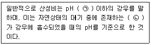
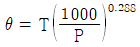
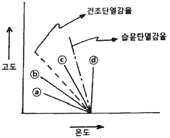
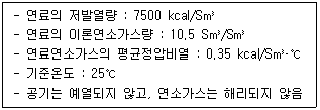
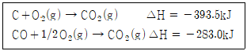
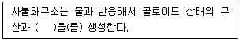
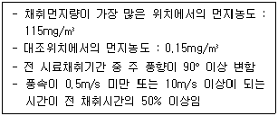
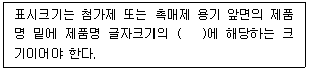

대기환경기사 (2021-09-12 기출문제)
1과목: 대기오염 개론
1. 온실효과와 지구온난화에 관한 설명으로 옳은 것은?
- CH4가 N2O보다 지구온난화에 기여도가 낮다.
- 지구온난화지수(GWP)는 SF6가 HFCs보다 작다.
- 대기의 온실효과는 실제 온실에서의 보온작용과 같은 원리이다.
- 북반구에서 대기 중의 CO2 농도는 여름에 감소하고 겨울에 증가하는 경향이 있다.
(정답률: 70%)

2. 대기오염물질의 확산을 예측하기 위한 바람장미에 관한 내용으로 옳지 않은 것은?
- 풍향은 바람이 불어오는 쪽으로 표시한다.
- 풍속이 0.2m/s 이하일 때를 정온(clam)이라 한다.
- 가장 빈번히 관측된 풍향을 주풍이라 하고 막대의 굵기를 가장 굵게 표시한다.
- 바람장미는 풍향별로 관측된 바람의 발생빈도와 풍속을 16방향인 막대기형으로 표시한 기상도형이다.
(정답률: 83%)
3. 다음 중 광화학반응과 가장 관련이 깊은 탄화수소는?
- Parafin계 탄화수소
- Olefin계 탄화수소
- Acetylene계 탄화수소
- 지방족 탄화수소
(정답률: 77%)
4. 광화학반응으로 생성되는 오염물질에 해당하지 않는 것은?
- 케톤
- PAN
- 과산화수소
- 염화불화탄소
(정답률: 57%)
5. 다음 중 오존파괴지수가 가장 큰 것은?
- CFC-113
- CFC-114
- Halon-1211
- Halon-1301
(정답률: 81%)
6. LA스모그에 관한 내용으로 가장 적합하지 않은 것은?
- 화학반응은 산화반응이다.
- 복사역전 조건에서 발생했다.
- 런던스모그에 비해 습도가 낮은 조건에서 발생했다.
- 석유계 연료에서 유래되는 질소산화물이 주 원인물질이다.
(정답률: 79%)
7. 가우시안 모델을 적용하기 위한 가정으로 가장 적합하지 않은 것은?
- 고도변화에 따른 풍속변화는 무시한다.
- 수평방향의 난류확산보다 대류에 의한 확산이 지배적이다.
- 배출된 오염물질은 흘러가는 동안 없어지거나 다른 물질로 바뀌지 않는다.
- 이류방향으로의 오염물질 확산을 무시하고 풍하방향으로의 확산만을 고려한다.
(정답률: 65%)
8. 먼지의 농도를 측정하기 위해 공기를 0.3m/s의 속도로 1.5시간 동안 여과지에 여과시킨 결과 여과지의 빛 전달률이 깨끗한 여과지의 80%로 감소했다. 1000m당 Coh는?
- 6.0
- 3.0
- 2.5
- 1.5
(정답률: 51%)
9. 일반적인 자동차 배출가스의 구성 중 자동차가 공회전할 때 특히 많이 배출되는 오염물질은?
- 일산화탄소
- 탄화수소
- 질소산화물
- 이산화탄소
(정답률: 66%)
10. 산성비에 관한 설명 중 ( ) 안에 알맞은 것은?

- ㉠ 3.6, ㉡ CO2
- ㉠ 3.6, ㉡ NO2
- ㉠ 5.6, ㉡ CO2
- ㉠ 5.6, ㉡ NO2
(정답률: 82%)
11. 온위에 관한 내용으로 옳지 않은 것은? (단, θ는 온위(K), T는 절대온도(K), P는 압력(mb))
- 온위는 밀도와 비례한다.

로 나타낼 수 있다.- 고도가 높아질수록 온위가 높아지면 대기는 안정하다.
- 표준압력(1000mb)에서 어느 고도의 공기를 건조단열적으로 끌어내리거나 끌어올려 1000mb 고도에 가져갔을 때 나타나는 온도를 온위라고 한다.
(정답률: 72%)
12. 표준상태에서 NO2 농도가 0.5 g/m3 이다. 150℃, 0.8atm에서 NO2 농도(ppm)는?(문제 오류로 가답안 발표시 1번으로 발표되었지만 확정답안 발표시 모두 정답처리 되었습니다. 여기서는 가답안인 1번을 누르면 정답 처리 됩니다.)
- 472
- 492
- 570
- 595
(정답률: 75%)
13. 불화수소(HF) 배출과 가장 관련 있는 산업은?
- 소다공업
- 도금공장
- 플라스틱공업
- 알루미늄공업
(정답률: 69%)
14. 환기를 위한 실내공기오염의 지표가 되는 물질은?
- SO2
- NO2
- CO
- CO2
(정답률: 79%)
15. 환경기온감률이 다음과 같을 때 가장 안정한 조건은?

- ⓐ
- ⓑ
- ⓒ
- ⓓ
(정답률: 70%)
16. 유효굴뚝높이가 1m인 굴뚝에서 배출되는 오염물질의 최대착지농도를 현재의 1/10로 낮추고자 할 때, 유효굴뚝높이를 몇 m 증가시켜야 하는가? (단, sutton의 확산방정식 사용, 기타 조건은 동일)
- 0.04
- 0.20
- 1.24
- 2.16
(정답률: 48%)
17. 지균풍에 관한 설명으로 가장 적합하지 않은 것은?
- 등압선에 평행하게 직선운동을 하는 수평의 바람이다.
- 고공에서 발생하기 때문에 마찰력의 영향이 거의 없다.
- 기압경도력과 전향력의 크기가 같고 방향이 반대일 때 발생한다.
- 북반구에서 지균풍은 오른쪽에 저기압, 왼쪽에 고기압을 두고 본다.
(정답률: 69%)
18. 유효굴뚝높이가 60m인 굴뚝으로부터 SO2가 125g/s의 속도로 배출되고 있다. 굴뚝높이에서의 풍속이 6m/s일 때, 이 굴뚝으로부터 500m 떨어진 연기중심선 상에서 오염물질의 지표농도(μg/m3)는? (단, 가우시안모델식 사용, 수평확산계수(δy)는 36m, 수직확산계수(δz)는 18.5m, 배출되는 SO2는 화학적으로 반응하지 않음)
- 52
- 66
- 2483
- 9957
(정답률: 46%)
19. 냄새물질에 관한 일반적인 설명으로 옳지 않은 것은?
- 분자량이 작을수록 냄새가 강하다.
- 분자 내에 황 또는 질소가 있으면 냄새가 강하다.
- 불포화도(이중결합 및 삼중결합의 수)가 높을수록 냄새가 강하다.
- 분자 내 수산기의 수가 1개일 때 냄새가 가장 약하고 수산기의 수가 증가할수록 냄새가 강해진다.
(정답률: 77%)
20. 광화학반응에 의해 고농도 오존이 나타날 수 있는 조건에 해당하지 않는 것은?
- 무풍상태일 때
- 일사량이 강할 때
- 대기가 불안정할 때
- 질소산화물과 휘발성 유기화합물이 배출이 많을 때
(정답률: 78%)
2과목: 연소공학
21. 화염으로부터 열을 받으면 가연성 증기가 발생하는 연소로 휘발유, 등유, 알코올, 벤젠 등 액체연료의 연소형태는?
- 증발연소
- 자기연소
- 표면연소
- 확산연소
(정답률: 81%)
22. 가연성 가스의 폭발범위에 관한 일반적인 설명으로 옳지 않은 것은?
- 가스의 온도가 높아지면 폭발범위가 넓어진다.
- 폭발한계농도 이하에서는 폭발성 혼합가스가 생성되기 어렵다.
- 폭발상한과 폭발하한의 차이가 클수록 위험도가 증가한다.
- 가스의 압력이 높아지면 상한값은 크게 변하지 않으나 하한값이 높아진다.
(정답률: 75%)
23. 자동차 내연기관에서 휘발유(C8H18)가 완전연소될 때 무게 기준의 공기연료비(AFR)는? (단, 공기의 분자량은 28.95)
- 15
- 30
- 40
- 60
(정답률: 52%)
24. 등가비(ø)에 관한 내용으로 옳지 않은 것은?
- ø = 공기비(m)
- ø = 1일 때 완전연소
- ø ＜ 1일 때 공기가 과잉
- ø ＞ 1일 때 연료가 과잉
(정답률: 74%)
25. 기체연료의 종류에 관한 설명으로 가장 적합한 것은?
- 수성가스는 코크스를 용광로에 넣어 선철을 제조할 때 발생하는 기체연료이다.
- 석탄가스는 석유류를 열분해, 접촉분해 및 부분 연소시킬 때 발생하는 기체연료이다.
- 고로가스는 고온으로 가열된 무연탄이나 코크스 등에 수증기를 반응시켜 얻은 기체연료이다.
- 발생로가스는 코크스나 석탄, 목재 등을 적열상태로 가열하여 공기 또는 산소를 보내 불완전 연소시켜 얻은 기체연료이다.
(정답률: 62%)
26. 공기비가 클 때 나타나는 현상으로 가장 적합하지 않은 것은?
- 연소실 내의 온도감소
- 배기가스에 의한 열손실 증가
- 가스폭발의 위험 증가와 매연 발생
- 배기가스 내의 SO2, NO2 함량 증가로 인한 부식 촉진
(정답률: 69%)
27. 과잉산소량(잔존 산소량)을 나타내는 표현은? (단, A : 실제공기량, A0 : 이론공기량, m : 공기비(m＞1), 표준상태, 부피 기준)
- 0.21 mA0
- 0.21 mA
- 0.21(m-1)A0
- 0.21(m-1)A
(정답률: 77%)
28. C:80%, H:15%, S:5%의 무게비로 구성된 중유 1kg을 1.1의 공기비로 완전 연소시킬 때, 건조 배출가스 중의 SO2농도(ppm)는? (단, 모든 S성분은 SO2가 됨)
- 3026
- 3530
- 4126
- 4530
(정답률: 45%)
29. 고체연료 중 코크스에 관한 설명으로 가장 적합하지 않은 것은?
- 주성분은 탄소이다.
- 원료탄보다 회분의 함량이 많다.
- 연소 시에 매연이 많이 발생한다.
- 원료탄을 건류하여 얻어지는 2차 연료로 코크스로에서 제조된다.
(정답률: 56%)
30. 화격자 연소에 관한 설명으로 가장 적합하지 않은 것은?
- 상부투입식은 투입되는 연료와 공기가 향류로 교차하는 형태이다.
- 상부투입식의 경우 화격자 상에 고정층을 형성해야하므로 분체상의 석탄을 그대로 사용할 수 없다.
- 정상상태에서 상부투입식은 상부로부터 석탄층→건조층→건류층→환원층→산화층→회층의 구성순서를 갖는다.
- 하부투입식은 저융점의 회분을 많이 포함한 연료의 연소에 적합하며 착화성이 나쁜 연료도 유용하게 사용 가능하다.
(정답률: 53%)
31. CH4의 최대탄산가스율(%)은? (단, CH4는 완전 연소함)
- 11.7
- 21.8
- 34.5
- 40.5
(정답률: 49%)
32. 다음 조건을 갖는 기체연료의 이론연소온도(℃)는?

- 1916
- 2066
- 2196
- 2256
(정답률: 63%)
33. 가솔린 기관의 노킹현상을 방지하기 위한 방법으로 가장 적합하지 않은 것은?
- 화염속도를 빠르게 한다.
- 말단 가스의 온도와 압력을 낮춘다.
- 혼합기의 자기착화온도를 높게 한다.
- 불꽃진행거리를 길게하여 말단가스가 고온·고압에 충분히 노출되도록 한다.
(정답률: 54%)
34. C2H6의 고발열량이 15520 kcal/Sm3 일 때, 저발열량(kcal/Sm3)은?
- 18380
- 16560
- 14080
- 12820
(정답률: 65%)
35. 89%의 탄소와 11%의 수소로 이루어진 액체연료를 1시간에 187kg씩 완전 연소할 때 발생하는 배출 가스의 조성을 분석한 결과 CO2:12.5%, O2:3.5%, N2:84% 이었다. 이 연료를 2시간 동안 완전 연소시켰을 때 실제 소요된 공기량(Sm3)은?
- 12⑤
- 2410
- 3610
- 4810
(정답률: 39%)
36. 연소에 관한 용어 설명으로 옳지 않은 것은?
- 유동점은 저온에서 중유를 취급할 경우의 난이도를 나타내는 척도가 될 수 있다.
- 인화점은 액체연료의 표면에 인위적으로 불씨를 가했을 때 연소하기 시작하는 최저온도이다.
- 발열량은 연료가 완전연소 할 때 단위중량 혹은 단위부피당 발생하는 열량으로 잠열을 포함하는 저발열량과 포함하지 않는 고발열량으로 구분된다.
- 발화점은 공기가 충분한 상태에서 연료를 일정온도 이상으로 가열했을 때 외부에서 점화하지 않더라도 연료 자신의 연소열에 의해 연소가 일어나는 최저온도이다.
(정답률: 59%)
37. 석탄의 유동층 연소에 관한 설명으로 가장 적합하지 않은 것은?
- 부하변동에 쉽게 적응할 수 없다.
- 유동매체의 보충이 필요하지 않다.
- 유동매체를 석회석으로 할 경우 로 내에서 탈황이 가능하다.
- 비교적 저온에서 연소가 행해지기 때문에 화격자 연소에 비해 thermal Nox 발생량이 적다.
(정답률: 54%)
38. 석유류의 특성에 관한 내용으로 옳은 것은?
- 일반적으로 인화점은 예열온도보다 약간 높은 것이 좋다.
- 인화점이 낮을수록 역화의 위험성이 낮아지고 착화가 곤란하다.
- 일반적으로 API가 10° 미만이면 경질유, 40° 이상이면 중질유로 분류된다.
- 일반적으로 경질유는 방향족계 화합물을 50% 이상 함유하고 중질유에 비해 밀도와 점도가 높은 편이다.
(정답률: 53%)
39. 25℃에서 탄소가 연소하여 일산화탄소가 될 때 엔탈피 변화량(kJ)은?

- -676.5
- -110.5
- 110.5
- 676.5
(정답률: 63%)
40. 액체연료를 비점(℃)이 큰 순서대로 나열한 것은?
- 등유 ＞ 중유 ＞ 휘발유 ＞ 경유
- 중유 ＞ 경유 ＞ 등유 ＞ 휘발유
- 경유 ＞ 휘발유 ＞ 중유 ＞ 등유
- 휘발유 ＞ 경유 ＞ 등유 ＞ 중유
(정답률: 73%)
3과목: 대기오염 방지기술
41. 질소산화물(NOx) 저감방법으로 가장 적합하지 않은 것은?
- 연소영역에서의 산소 농도를 높인다.
- 부분적인 고온영역이 없게 한다.
- 고온영역에서 연소가스의 체류시간을 짧게 한다.
- 유기질소화합물을 함유하지 않는 연료를 사용한다.
(정답률: 60%)
42. 유해가스를 처리하는 흡수장치의 효율을 높이기 위한 흡수액의 조건은?
- 점성이 커야 한다.
- 어느점이 높아야 한다.
- 휘발성이 적어야 한다.
- 가스의 용해도가 낮아야 한다.
(정답률: 60%)
43. 먼지의 자유낙하에서 종말침강속도에 관한 설명으로 옳은 것은?
- 입자가 바닥에 닿는 순간의 속도
- 입자의 가속도가 0이 될 때의 속도
- 입자의 속도가 0이 되는 순간의 속도
- 정지된 다른 입자와 충돌하는데 필요한 최소한의 속도
(정답률: 62%)
44. 후드에 의한 먼지 흡입에 관한 설명으로 옳지 않은 것은?
- 국소적인 흡인방식을 취한다.
- 배풍기에 충분한 여유를 둔다.
- 후드를 발생원에 가깝게 설치한다.
- 후드의 개구면적을 가능한 크게 한다.
(정답률: 70%)
45. 집진장치의 입구 쪽 처리가스 유량이 300,000 m3/h, 먼지 농도가 15g/m3 이고, 출구 쪽 처리된 가스의 유량이 3⑤,000 m3/h, 먼지 농도가 40mg/m3 일 때, 집진효율(%)은?
- 89.6
- 95.3
- 99.7
- 103.2
(정답률: 60%)
46. 직경이 10μm인 구형입자가 20℃ 층류영역의 대기 중에서 낙하하고 있다. 입자의 종말침강속도(m/s)와 레이놀즈수를 순서대로 나열한 것은? (단, 20℃에서 입자의 밀도 = 1800 kg/m3, 공기의 밀도 = 1.2 kg/m3, 공기의 점도 = 1.8×10-5 kg/m·s)
- 5.44×10-3, 3.63×10-3
- 5.44×10-3, 2.44×10-6
- 3.63×10-6, 2.44×10-6
- 3.63×10-6, 3.63×10-3
(정답률: 44%)
47. 표준상태의 공기가 내경이 50cm인 강관 속을 2m/s의 속도로 흐르고 있을 때, 공기의 질량유속은(kg/s)은? (단, 공기의 평균분자량 = 29)
- 0.34
- 0.51
- 0.78
- 0.97
(정답률: 42%)
48. 여과집진장치의 탈진방식 중 간헐식에 관한 설명으로 옳지 않은 것은?
- 연속식에 비해 먼지의 재비산이 적고 높은 집진효율을 얻을 수 있다.
- 고농도, 대량가스 처리에 적합하며 점성이 있는 조대머지의 탈진에 효과적이다.
- 진동형은 여과포의 음파진동, 횡진동, 상하진동에 의해 포집된 먼지를 털어내는 방식이다.
- 역기류형은 단위집진실에 처리가스의 공급을 중단시킨 후 순차적으로 탈진하는 방식이다.
(정답률: 64%)
49. 촉매소각법에 관한 일반적인 설명으로 옳지 않은 것은?
- 열소각법에 비해 연소 반응시간이 짧다.
- 열소각법에 비해 thermal NOx 생성량이 작다.
- 백금, 코발트는 촉매로 바람직하지 않은 물질이다.
- 촉매제가 고가이므로 처리가스량이 많은 경우에는 부적합하다.
(정답률: 70%)
50. 물리적 흡착에 의한 가스처리에 관한 설명으로 옳지 않은 것은?
- 처리가스의 분압이 낮아지면 흡착량이 감소한다.
- 처리가스의 온도가 높아지면 흡착량이 증가한다.
- 흡착과정이 가역적이기 때문에 흡착제의 재생이 가능하다.
- 다분자층 흡착이며 화학적 흡착에 비해 오염가스의 회수가 용이하다.
(정답률: 58%)
51. 원심력집진장치(cyclone)의 집진효율에 관한 내용으로 옳은 것은?
- 원통의 직경이 클수록 집진효율이 증가한다.
- 입자의 밀도가 클수록 집진효율이 감소한다.
- 가스의 온도가 높을수록 집진효율이 증가한다.
- 가스의 유입속도가 클수록 집진효율이 증가한다.
(정답률: 47%)
52. 세정집진장치의 장점으로 가장 적합한 것은?
- 점착성 및 조해성 먼지의 제거가 용이하다.
- 별도의 폐수처리시설이 필요하지 않다.
- 먼지에 의한 폐쇄 등의 장애가 일어날 확률이 낮다.
- 소수성 먼지에 대해 높은 집진효율을 얻을 수 있다.
(정답률: 60%)
53. 흡인통풍의 장점으로 가장 적합하지 않은 것은?
- 통풍력이 크다.
- 연소용 공기를 예열할 수 있다.
- 굴뚝의 통풍저항이 큰 경우에 적합하다.
- 노 내압이 부압(-)으로 역화의 우려가 없다.
(정답률: 49%)
54. 원통형 전기집진장치의 집진극 직경이 10cm이고 길이가 0.75m이다. 배출가스의 유속이 2m/s이고 먼지의 겉보기이동속도가 10cm/s 일 때, 이 집진장치의 실제집진효율(%)은?
- 78
- 86
- 95
- 99
(정답률: 25%)
55. 외기 유입이 없을 때 집진효율이 88%인 원심력집진장치(cyclone)가 있다. 이 원심력 집진장치에 외기가 10% 유입되었을 때, 집진효율(%)은? (단, 외기가 10% 유입되었을 때 먼지통과율은 외가가 유입되지 않은 경우의 3배)
- 54
- 64
- 75
- 83
(정답률: 45%)
56. 불소화합물 처리에 관한 내용이다. ( ) 안에 들어갈 화학식으로 가장 적합한 것은?

- CaF2
- NaHF2
- NaSiF6
- H2SiF6
(정답률: 68%)
57. 유체의 점도를 나타내는 단위에 해당하지 않는 것은?
- poise
- Pa·s
- L·atm
- g/cm·s
(정답률: 65%)
58. 중력집진장치에 관한 설명으로 가장 적합하지 않은 것은?
- 배기가스의 점도가 낮을수록 집진효율이 증가한다.
- 함진가스의 온도변화에 의한 영향을 거의 받지 않는다.
- 침강실의 높이가 낮고, 길이가 길수록 집진효율이 증가한다.
- 함진기사의 유량, 유입속도 변화에 거의 영향을 받지 않는다.
(정답률: 48%)
59. 처리가스량이 30000 m3/h, 압력손실이 300 mmH2O인 집진장치를 효율이 47%인 송풍기로 운전할 때, 송풍기의 소요동력(kW)은?
- 38
- 43
- 49
- 52
(정답률: 55%)
60. 먼지의 입경측정 방법을 직접측정법과 간접측정법으로 구분할 때, 직접측정법에 해당하는 것은?
- 광산란법
- 관성충돌법
- 액상침강법
- 표준체측정법
(정답률: 60%)
4과목: 대기오염 공정시험기준(방법)
61. 배출가스 중의 수은화합물을 냉증기 원자흡수 분광광도법에 따라 분석할 때 사용하는 흡수액은?
- 질산암모늄 + 황산용액
- 과망간산포타슘 + 황산용액
- 시안화포타슘 + 디티존용액
- 수산화칼슘 + 피로가롤용액
(정답률: 46%)
62. 비분산적외선분석계의 장치구성에 관한 설명으로 옳지 않은 것은?
- 비교셀은 시료셀과 동일한 모양을 가지며 산소를 봉입하여 사용한다.
- 광원은 원칙적으로 흑체발광으로 니크롬선 또는 탄화규소의 저항체에 전류를 흘려 가열한 것을 사용한다.
- 광학필터는 시료가스 중에 포함되어 있는 간섭 물질가스의 흡수파장역 적외선을 흡수제거하기 위해 사용한다.
- 회전섹타는 시료광속과 비교광속을 일정주기로 단속시켜 광학적으로 변조시키는 것으로 측정 광신호의 증폭에 유효하고 잡신호의 영향을 줄일 수 있다.
(정답률: 49%)
63. 다음 자료를 바탕으로 구한 비산먼지의 농도(mg/m3)는?

- 114.9
- 137.8
- 165.4
- 206.7
(정답률: 49%)
64. 대기오염공정시험기준상의 용어 정의 및 규정에 관한 내용으로 옳은 것은?
- “약”이란 그 무게 또는 부피에 대해 ±1% 이상의 차가 있어서는 안 된다.
- 상온은 15~25℃, 실온은 1~35℃, 찬 곳은 따로 규정이 없는 한 0~15℃의 곳을 뜻한다.
- 방울수라 함은 20℃에서 정제수 10방울을 떨어뜨릴 때 그 부피가 약 1mL 되는 것을 뜻한다.
- 10억분율은 pphm으로 표시하고 따로 표시가 없는 한 기체일 때는 용량 대 용량(V/V), 액체일 때는 중량 대 중량(W/W)을 표시한 것을 뜻한다.
(정답률: 66%)
65. 가로 길이가 3m, 세로 길이가 2m인 상·하 동일 단면적의 사각형 굴뚝이 있다. 이 굴뚝의 환산직경(m)은?
- 2.2
- 2.4
- 2.6
- 2.8
(정답률: 60%)
66. 굴뚝 배출가스 중의 황산화물 시료채취에 관한 일반적인 내용으로 옳지 않은 것은?
- 채취관과 삼방콕 등 가열하는 실리콘을 제외한 보통 고무관을 사용한다.
- 시료가스 중의 황산화물과 수분이 응축되지 않도록 시료가스 채취관과 콕 사이를 가열할 수 있는 구조로 한다.
- 시료채취관은 유리, 석용, 스테인리스강 등 시료가스 중의 황산화물에 의해 부식되지 않는 재질을 사용한다.
- 시료가스 중에 먼지가 섞여 들어가는 것을 방지하기 위해 채취관의 앞 끝에 알칼리(alkali)가 없는 유리솜 등의 적당한 여과재를 넣는다.
(정답률: 65%)
67. 배출가스 중의 산소를 오르자트 분석법에 따라 분석할 때 사용하는 산소 흡수액은?(관련 규정 개정전 문제로 여기서는 기존 정답인 4번을 누르면 정답 처리됩니다. 자세한 내용은 해설을 참고하세요.)
- 입상아연 + 피로가롤용액
- 수산화소듐용액 + 피로가롤용액
- 염화제일주석용액 + 피로가롤용액
- 수산화포타슘용액 + 피로가롤용액
(정답률: 66%)
68. 굴뚝 배출가스 중의 폼알데하이드 및 알데하이드류의 분석방법에 해당하지 않는 것은?
- 차아염소산염 자외선/가시선분광법
- 아세틸아세톤 자외선/가시선분광법
- 크로모트로핀산 자외선/가시선분광법
- 고성능액체크로마토그래피법
(정답률: 55%)
69. 환경대기 중의 시료채취 시 주의사항으로 옳지 않은 것은?
- 시료채취 유량은 규정하는 범위 내에서 되도록 많이 채취하는 것을 원칙으로 한다.
- 악취물질의 채취는 되도록 짧은 시간 내에 끝내고 입자상 물질 중의 금속성분이나 발암성물질 등은 되도록 장시간 채취한다.
- 입자상 물질을 채취할 경우에는 채취관 벽에 분진이 부착 또는 퇴적하는 것을 피하고 특히 채취관을 수평방향으로 연결할 경우에는 되도록 관의 길이를 길게 하고 곡률반경을 작게 한다.
- 바람이나 눈, 비로부터 보호하기 위해 측정기기는 실내에 설치하고 채취구를 밖으로 연결할 경우 채취관 벽과의 반응, 흡착, 흡수 등에 의한 영향을 최소한도로 줄일 수 있는 재질과 방법을 선택한다.
(정답률: 62%)
70. 분석대상가스가 암모니아인 경우 사용가능한 채취관의 재질에 해당하지 않는 것은?
- 석영
- 불소수지
- 실리콘수지
- 스테인리스강
(정답률: 47%)
71. 환경대기 중의 석면을 위상차현미경법에 따라 측정할 때에 관한 설명으로 옳지 않은 것은?
- 시료채취 시 시료 포집면이 주 풍향을 향하도록 설치한다.
- 시료채취저짐에서의 실내기류는 0.3m/s 이내가 되도록 한다.
- 포집한 먼지 중 길이가 10μm 이하이고 길이와 폭의 비가 5:1 이하인 섬유를 석면섬유로 계수한다.
- 시료채취는 해당시설의 실제 운영조건과 동일하게 유지되는 일반 환경상태에서 수행하는 것을 원칙으로 한다.
(정답률: 64%)
72. 단색화장치를 사용하여 광원에서 나오는 빛 중 좁은 파장범위의 빛만을 선택한 뒤 액층에 통과시켰다. 입사광의 강도가 1이고, 투사광의 강도가 0.5일 때, 흡광도는? (단, Lambert-Beer 법칙 적용)
- 0.3
- 0.5
- 0.7
- 1.0
(정답률: 50%)
73. 유류 중의 황 함유량을 측정하기 위한 분석방법에 해당하는 것은?
- 광학기법
- 열탈착식 광도법
- 방사선식 여기법
- 자외선/가시선 분광법
(정답률: 52%)
74. 피토관으로 측정한 결과 덕트(duct) 내부 가스의 동압이 13mmH2O이고 유속이 20m/s이었다. 덕트의 밸브를 모두 열었을 때 동압이 26mmH2O일 때, 덕트의 밸브를 모두 열었을 때의 가스 유속(m/s)은?
- 23.2
- 25.0
- 27.1
- 28.3
(정답률: 39%)
75. 흡광차분광법에 관한 설명으로 옳지 않은 것은?
- 광원부는 발·수광부 및 광케이블로 구성된다.
- 광원으로 180~2850nm 파장을 갖는 제논램프를 사용한다.
- 일반 흡광광도법은 적분적이며 흡광차 분광법은 미분적이라는 차이가 있다.
- 분석장치는 분석기와 광원부로 나누어지며 분석기 내부는 분광기, 샘플 채취부, 검지부, 분석부, 통신부 등으로 구성된다.
(정답률: 60%)
76. 원자흡수분광광도법에 따라 분석할 때, 분석오차를 유발하는 원인으로 가장 적합하지 않은 것은?
- 검정곡선 작성의 잘못
- 공존물질에 의한 간섭영향 제거
- 광원부 및 파장선택부의 광학계 조정 불량
- 가연성가스 및 조연성가스의 유량 또는 압력의 변동
(정답률: 59%)
77. 어떤 사업장의 굴뚝에서 배출되는 오염물질의 농도가 600ppm이고 표준산소농도가 6%, 실측산소농다가 8% 일 때, 보정된 오염물질의 농도(ppm)는?
- 692.3
- 722.3
- 832.3
- 862.3
(정답률: 56%)
78. 이온크로마토그래피법에 관한 일반적인 설명으로 옳지 않은 것은?
- 검출기로 수소염이온화검출기(FID)가 많이 사용된다.
- 용리액조, 송액펌프, 시료주입장치, 분리관, 써프렛서, 검출기, 기록계로 구성되어 있다.
- 강수(비, 눈, 우박 등), 대기먼지, 하천수 중의 이온성분을 정성, 정량 분석하는데 사용된다.
- 용리액조는 이온성분이 용출되지 않는 재질로써 용리액을 직접 공기와 접촉시키지 않는 밀폐된 것을 선택한다.
(정답률: 59%)
79. 굴뚝연속자동측정기기에 사용되는 도관에 관한 설명으로 옳지 않은 것은?
- 도관은 가능한 짧은 것이 좋다.
- 냉각도관은 될 수 있는 한 수직으로 연결한다.
- 기체-액체 분리관은 도관의 부착위치 중 가장 높은 부분에 부착한다.
- 응축수의 배출에 사용하는 펌프는 내구성이 좋아야 하고, 이 때 응축수 트랩은 사용하지 않아도 된다.
(정답률: 57%)
80. 환경대기 시료채취방법 중 측정대상 기체와 선택적으로 흡수 또는 반응하는 용매에 시료가스를 일정 유량으로 통과시켜 채취하는 방법으로 채취관-여과재-채취부-흡입펌프-유량계(가스미터)로 구성되는 것은?
- 용기채취법
- 고체흡착법
- 직접채취법
- 용매채취법
(정답률: 70%)
5과목: 대기환경관계법규
81. 대기환경보전법령상 환경기술인의 준수사항으로 옳지 않은 것은?
- 배출시설 및 방지시설의 운영기록을 사실에 기초하여 작성해야 한다.
- 환경기술인을 공동으로 임명한 경우 환경기술인이 해당 사업장에 번갈아 근무해서는 안 된다.
- 배출시설 및 방지시설을 정상가동하여 대기오염물질 등의 배출이 배출허용기준에 맞도록 해야 한다.
- 자가측정 시 사용한 여과지는 환경오염 공정시험기준에 따라 기록한 시료채취 기록지와 함께 날짜별로 보관·관리해야 한다.
(정답률: 73%)
82. 대기환경보전법령상 환경부장관 또는 시·도지사가 배출부과금의 납부의무자가 납부기한 전에 배출부과감을 납부할 수 없다고 인정하여 징수를 유예하거나 징수금액을 분할 납부하게 할 경우에 관한 설명으로 옳지 않은 것은?
- 부과금의 분할납부 기한 및 금액과 그 밖에 부과금의 부과·징수에 필요한 사항은 환경부장관 또는 시·도지사가 정한다.
- 초과부과금의 징수유예기간은 유예한 날의 다음 날부터 2년 이내이며 그 기간 중의 분할납부 횟수는 12회 이내이다.
- 기본부과금의 징수유예기간은 유예한 날의 다음 날부터 다음 부과기간의 개시일 전일까지이며 그 기간 중의 분할납부 횟수는 4회 이내이다.
- 징수유예기간 내에 징수할 수 없다고 인정되어 징수유예기간을 연장하거나 분할납부 횟수를 증가시킬 경우 징수유예기간의 연장은 유예한 날의 다음날부터 5년 이내이며 분할납부 횟수는 30회 이내이다.
(정답률: 58%)
83. 대기환경보전법령상 “자동차 사용의 제한 및 사업장의 연료사용량 감축 권고” 등의 조치사항이 포함되어야 하는 대기오염경보단계는?
- 경계 발령
- 경보 발령
- 주의보 발령
- 중대경보 발령
(정답률: 63%)
84. 대기환경보전법령상 일일 기준초과배출량 및 일일유량의 산정방법으로 옳지 않은 것은?
- 측정유량의 단위는 m3/h 로 한다.
- 먼지를 제외한 그 밖의 오염물질의 배출농도 단위는 ppm 으로 한다.
- 특정대기유해물질의 배출허용기준초과 일일오염물질배출량은 소수점 이하 넷째자리까지 계산한다.
- 일일조업시간은 배출량을 측정하기 전 최근 조업한 3개월 동안의 배출시설 조업시간 평균치를 일 단위로 표시한다.
(정답률: 59%)
85. 환경정책기본법령상 SO2의 대기환경기준은? (단, ㉠ 연간 평균치, ㉡ 24시간 평균치, ㉢ 1시간 평균치)
- ㉠ : 0.02 ppm 이하, ㉡ : 0.⑤ ppm 이하, ㉢ : 0.15 ppm 이하
- ㉠ : 0.03 ppm 이하, ㉡ : 0.06 ppm 이하, ㉢ : 0.10 ppm 이하
- ㉠ : 0.⑤ ppm 이하, ㉡ : 0.10 ppm 이하, ㉢ : 0.12 ppm 이하
- ㉠ : 0.06 ppm 이하, ㉡ : 0.10 ppm 이하, ㉢ : 0.12 ppm 이하
(정답률: 57%)
86. 대기환경보전법령상 배출시설 및 방지시설 등과 관련된 1차 행정처분기준이 조업정지에 해당하지 않는 경우는?
- 방지시설을 설치해야 하는 자가 방지시설을 임의로 철거한 경우
- 배출허용기준을 초과하여 개선명령을 받은 자가 개선명령을 이행하지 않은 경우
- 방지시설을 설치해야 하는 자가 방지시설을 설치하지 않고 배출시설을 가동하는 경우
- 배출시설 가동개시 신고를 해야 하는 자가 가동개시 신고를 하지 않고 조업하는 경우
(정답률: 46%)
87. 실내공기질 관리법령상 공동주택 소유자에게 권고하는 실내 라돈 농도의 기준은?
- 1세제곱미터당 148베크렐 이하
- 1세제곱미터당 348베크렐 이하
- 1세제곱미터당 548베크렐 이하
- 1세제곱미터당 848베크렐 이하
(정답률: 66%)
88. 대기환경보전법령상 첨가제·촉매제 제조기준에 맞는 제품의 표시방법에 관한 내용 중 ( ) 안에 알맞은 것은?

- 100분의 50 이상
- 100분의 30 이상
- 100분의 15 이상
- 100분의 5 이상
(정답률: 73%)
89. 대기환경보전법령상 환경부령으로 정하는 바에 따라 특별자치시장·특별자치도지사·시장·군수·구청장에게 신고하고 비산먼지의 발생을 억제하기 위한 시설을 설치하거나 필요한 조치를 해야할 경우에 해당하지 않는 경우는?(문제 오류로 가답안 발표시 3번으로 발표되었지만 확정답안 발표시 모두 정답처리 되었습니다. 여기서는 가답안인 3번을 누르면 정답 처리 됩니다.)
- 비산먼지를 발생시키는 운송장비 제조업을 하려는 자
- 비산먼지를 발생시키는 비료 및 사료제품의 제조업을 하려는 자
- 비산먼지를 발생시키는 금속물질의 채취업 및 가공업을 하려는 자
- 비산먼지를 발생시키는 시멘트 관련 제품의 가공업을 하려는 자
(정답률: 70%)
90. 대기환경보전법령상 제조기준에 맞지 않는 첨가제 또는 촉매제임을 알면서 사용한 자에 대한 과태료 부과기준은?
- 1천만원 이하의 과태료
- 500만원 이하의 과태료
- 300만원 이하의 과태료
- 200만원 이하의 과태료
(정답률: 33%)
91. 대기환경보전법령상 자동차연료형 첨가제의 종류에 해당하지 않는 것은? (단, 그 밖에 환경부장관이 자동차의 성능을 향상시키거나 배출가스를 줄이기 위해 필요하다고 정하여 고시하는 경우를 제외)
- 세척제
- 청정분산제
- 매연발생제
- 옥탄가향상제
(정답률: 69%)
92. 악취방지법령상 지정악취물질에 해당하지 않는 것은?
- 메틸메르캅탄
- 트라이메틸아민
- 아세트알데하이드
- 아닐린
(정답률: 56%)
93. 실내공기질 관리법령의 적용 대상이 되는 대통령령으로 정하는 규모의 다중이용시설에 해당하지 않는 것은?
- 모든 지하역사
- 여객자동차터미널의 연면적 2천2백제곱미터인 대합실
- 철도역사의 연면적 2천2백제곱미터인 대합실
- 공항시설 중 연면적 1천1백제곱미터인 여객터미널
(정답률: 57%)
94. 대기환경보전법령상 시·도지사가 설치하는 대기오염 측정망에 해당하는 것은?
- 대기 중의 중금속 농도를 측정하기 위한 대기중금속측정망
- 대기오염물질의 지역배경농도를 측정하기 위한 교외대기측정망
- 도시지역의 휘발성유기화합물 등의 농도를 측정하기 위한 광화학대기오염물질측정망
- 산성 대기오염물질의 건성 및 습성 침착량을 측정하기 위한 산성강하물측정망
(정답률: 62%)
95. 대기환경보전법령상 배출시설 설치허가를 받은 자가 변경신고를 해야 하는 경우에 해당하지 않는 것은?
- 배출시설 또는 방지시설을 임대하는 경우
- 사업장의 명칭이나 대표자를 변경하는 경우
- 종전의 연료보다 황함유량이 높은 연료로 변경하는 경우
- 배출시설의 규모를 10% 미만으로 폐쇄함에 따라 변경되는 대기오염물질의 양이 방지시설의 처리용량 범위 내일 경우
(정답률: 64%)
96. 대기환경보전법령상 초과부과금 부과대상이 되는 오염물질에 해당하지 않는 것은?
- 일산화탄소
- 암모니아
- 시안화수소
- 먼지
(정답률: 55%)
97. 환경부장관은 라돈으로 인한 건강피해가 우려되는 시·도가 있는 경우 해당 시·도지사에게 라돈관리계획을 수립하여 시행하도록 요청할 수 있다. 이 때, 라돈관리계획에 포함되어야 하는 사항에 해당하지 않는 것은? (단, 그 밖에 라돈관리를 위해 시·도지사가 필요하다고 인정하는 사항은 제외)
- 다중이용시설 및 공동주택 등의 현황
- 라돈으로 인한 건강피해의 방지 대책
- 인체에 직접적인 영향을 미치는 라돈의 양
- 라돈의 실내 유입 차단을 위한 시설 개량에 관한 사항
(정답률: 50%)
98. 실내공기질 관리법령상 의료기간의 폼알데하이드 실내공기질 유지기준은?
- 10 μg/m3 이하
- 20 μg/m3 이하
- 80 μg/m3 이하
- 150 μg/m3 이하
(정답률: 51%)
99. 대기환경보전법령상 대기오염방지시설에 해당하지 않는 것은? (단, 환경부장관이 인정하는 기타 시설은 제외)
- 흡착에 의한 시설
- 응집에 의한 시설
- 촉매반응을 이용하는 시설
- 미생물을 이용한 처리시설
(정답률: 58%)
100. 대기환경보전법령상의 용어 정의로 옳은 것은?
- “온실가스”란 적외선 복사열을 흡수하거나 다시 방출하여 온실효과를 유발하는 대기 중의 가스상 물질로서 이산화탄소, 메탄, 아산화질소, 수소불화탄소, 과불화탄소, 유불화황을 말한다.
- “기후·생태계변화유발물질”이란 지구온난화 등으로 생태계의 변화를 가져올 수 있는 액체상 물질로서 환경부령으로 정하는 것을 말한다.
- “매연”이란 연소할 때에 생기는 탄소가 주가 되는 기체상 물질을 말한다.
- “검댕”이란 연소할 때에 생기는 탄소가 응결하여 생성된 지름이 10 μm 이상인 기체상 물질을 말한다.
(정답률: 51%)